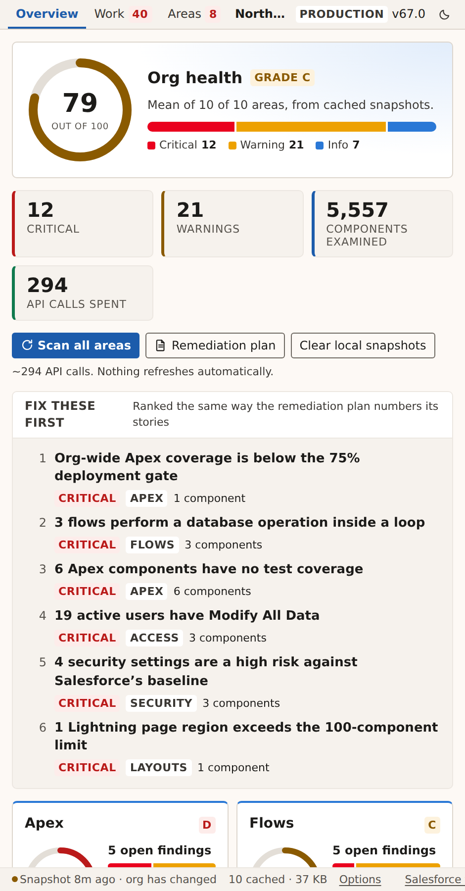
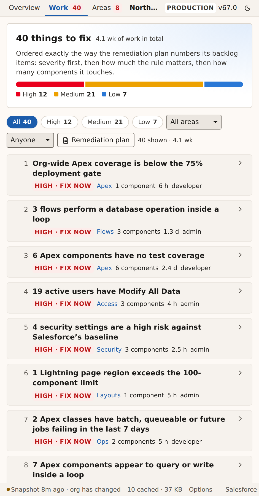
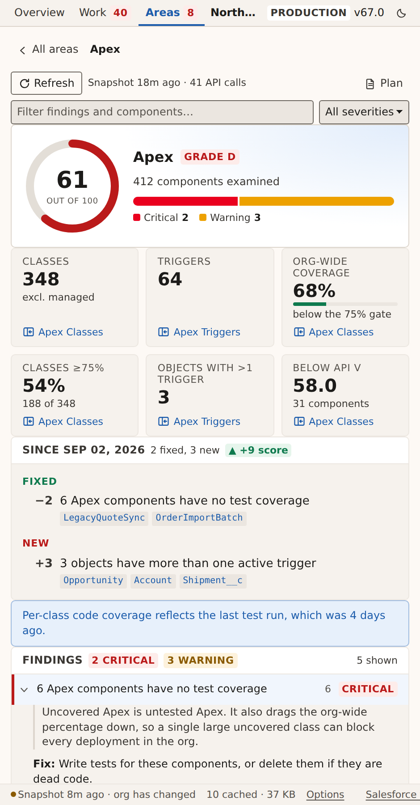
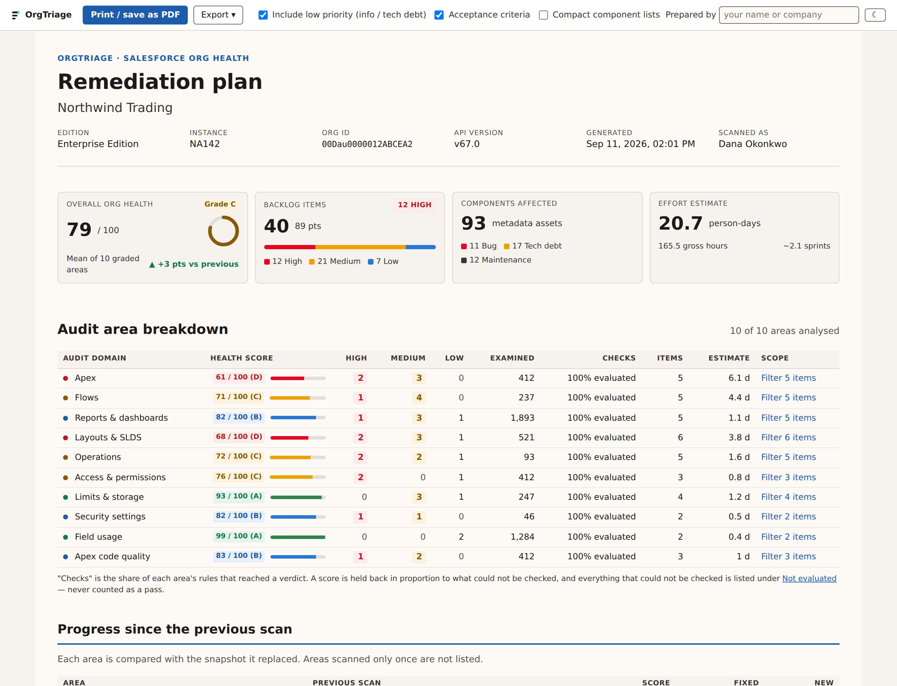

Salesforce org-health assessment
Turn Salesforce org findings into a prioritized backlog.
Assess org health, rank issues by impact, and create Jira work items with steps to follow.
Assess→Prioritize→Act
Free, read-only assessments in Chrome’s side panel. No Salesforce package installation required. Analysis runs locally, with no OrgTriage server or telemetry.
Choose how you work
OrgTriage for Chrome
Assess ten areas of org health from Chrome’s side panel. Review prioritized findings and export a remediation plan with effort estimates.
Chrome Web Store listing pending.
Claude Code skills
Two skills for Claude Code: one assesses an org through the Salesforce CLI and builds the same prioritized backlog; the other takes one item and does the work in a Salesforce project, on a branch, with a pull request for review. The extension itself uses no AI.
Published with the source repository.
In-org app
Review findings and coordinate remediation with your team inside Salesforce, with findings saved over time instead of kept in one admin’s browser.
Release timing to be announced.
What it checks
Ten areas, each scored on its own and combined into one org-health grade. Rules cite the documentation behind them where it exists — Salesforce’s, or the open-source linter the rule came from — and say plainly when a threshold is our recommendation rather than a Salesforce limit.
- ApexOrg-wide and per-class test coverage against the 75% deployment gate, triggers without coverage, stale API versions, failing and stale test runs.
- Apex code qualitySource-level patterns in your own classes: empty catch blocks, hard-coded ids, unbounded queries, oversized classes.
- FlowsDML and queries inside loops, missing fault paths, run-order collisions, old API versions, version clutter, never-activated flows, Process Builder and workflow rules still in place.
- Reports & dashboardsReports with no filters, unindexed filters, long-text filters that silently truncate, dashboards that never refresh or point at reports the scan cannot find.
- Layouts & SLDSField-heavy layouts against Salesforce's own recommendation, Lightning page component counts, and stylesheet checks for retired SLDS patterns.
- Field usageCustom fields nothing references, fields with no description, validation rules carrying ids that will not survive a deployment.
- Access & permissionsDormant admins, Modify All Data holders, passwords set never to expire, unassigned permission sets, idle licences.
- Security settingsYour Health Check score and the settings that sit below Salesforce's baseline, read from the same API the Setup page uses.
- OperationsScheduled jobs in error, orphaned jobs, paused flow interviews, stuck approvals, release updates due, hard-coded URLs in buttons.
- Limits & storageData and file storage, the rolling 24-hour API allowance, debug-log volume, and every org limit with little headroom left.
From finding to backlog
Each finding becomes a backlog item with a priority, affected components, steps to fix it, acceptance criteria and an estimate in hours and points. Export the plan to Markdown, CSV for your tracker, or a Jira import that creates Bugs for incorrect behaviour and Tasks for maintenance and cleanup.
Understand the scan
- Read-only. It reads configuration, metadata and Apex source. It never writes to your org, never executes a report, and never reads business records — no accounts, contacts, leads or custom data.
- Your session, in your browser. API calls go from the extension’s service worker straight to your own Salesforce org. The session id is used only to authenticate those calls and is sent nowhere else.
- No backend, no telemetry. There is no OrgTriage server. Scan results live in your browser’s local storage and nowhere else, and you choose when to export a plan.
- API usage. Every area shows how many API calls it used, and the footer shows what OrgTriage has used against your org’s rolling 24-hour allowance. Nothing scans on its own.
- Scan coverage. An area that could not be checked is marked as unchecked, not given a clean score. Managed-package components are excluded by default, and the scan shows how many it excluded.
Read the privacy policy, including the limited user information the access and operations checks read, and the permissions explainer. Both describe what the code does.
Use it with judgement
OrgTriage is a diagnostic tool, not an adviser, and it is provided as is. Every finding is a recommendation. A high score is not a statement that your org is secure or correctly configured, and an area that could not be checked is marked as unchecked, not given a clean score.
Have an experienced Salesforce administrator or developer review any change before it is made, test it outside production, and deploy it the way you deploy everything else. The terms of use explain this in detail.
Help improve OrgTriage
Email support@orgtriage.com · Report a bug or request a feature · Source on GitHub. If a rule gets something wrong in your org, tell us what it reported and what you expected.
Open source
OrgTriage is open source under Apache 2.0. Issues and pull requests are welcome. Do not include org names, user names, record data, session details or an exported plan in a bug report. Findings name your users and components; describe them instead, and remove identifying details from screenshots.
See OrgTriage in action
Screenshots use Northwind Trading, the built-in sample org — sample data, not a customer org.



